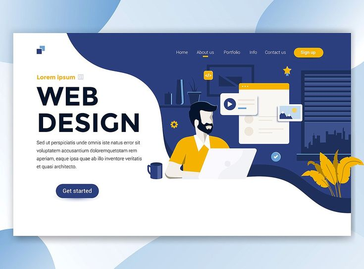
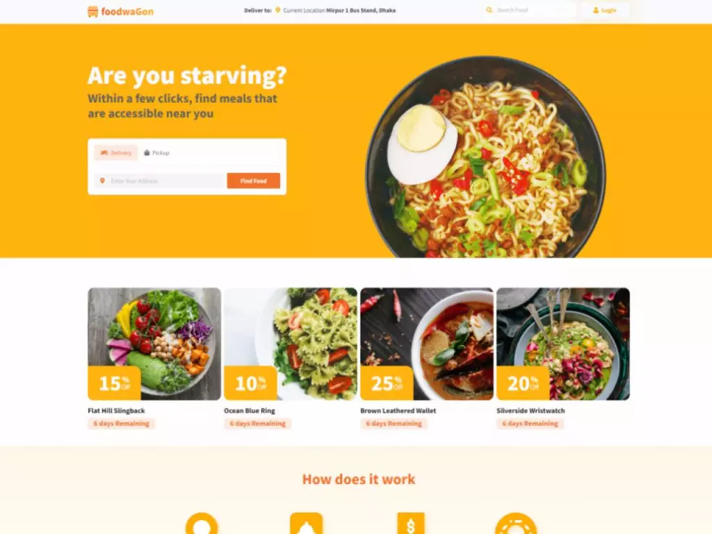
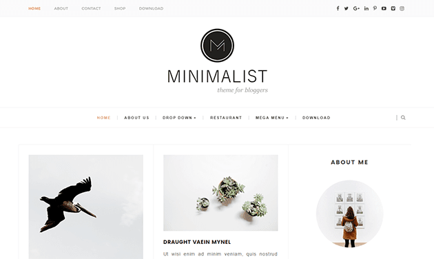

Hi There!
"Hi there! I’m a budding front-end developer passionate about crafting beautiful, user-friendly websites. Here, you’ll find the projects I’ve built to hone my skills and a glimpse into my journey as I grow in HTML, CSS, and beyond. Thanks for stopping by and exploring my work!"
About Me:
I’m a self-taught front-end developer in the early stages of my journey, working steadily to transform my passion for the web into tangible, engaging online experiences. Ever since I discovered the power of HTML and CSS, I’ve been fascinated by the process of taking a blank canvas and turning it into a user-friendly interface that anyone can explore. My interest doesn’t stop at just coding, though; I’m equally excited about understanding the principles of good design, accessibility, and performance. Each new project I tackle is a chance to improve my craft, whether it’s experimenting with responsive layouts, refining my color choices, or adding subtle animations to enhance the user experience.
My primary goal is to build websites that feel both aesthetically pleasing and logically structured. I believe that attention to detail, consistency, and user-centric thinking form the foundation of great front-end development. Beyond the code, I’m always exploring tools and reading articles to stay current in this fast-paced field. From diving into new CSS techniques to learning how to incorporate emerging best practices, I’m committed to continuous growth. This journey isn’t just about improving my technical skills—it’s about embracing creativity, collaboration, and curiosity in everything I do.
- Html
- CSS
- Java script
Core skills:
My Projects:
1. Portfolio Landing Page
A sleek and responsive homepage showcasing my profile, skills, and past work. Designed to reflect my personal brand, this project highlights clean layouts, subtle animations, and an intuitive navigation experience.
Learn more2. Responsive Restaurant Menu
An interactive, mobile-friendly menu that organizes dishes and prices in an easy-to-scan format. Featuring elegant typography, vibrant imagery, and a flexible grid system, it ensures customers can effortlessly browse and choose their next meal.
Learn more3. Minimalist Blog Template
A simple, content-focused blog design where images and text shine through. By employing a clean layout, neutral color palette, and ample white space, this project prioritizes readability and helps users dive right into the posts they love.
Learn more